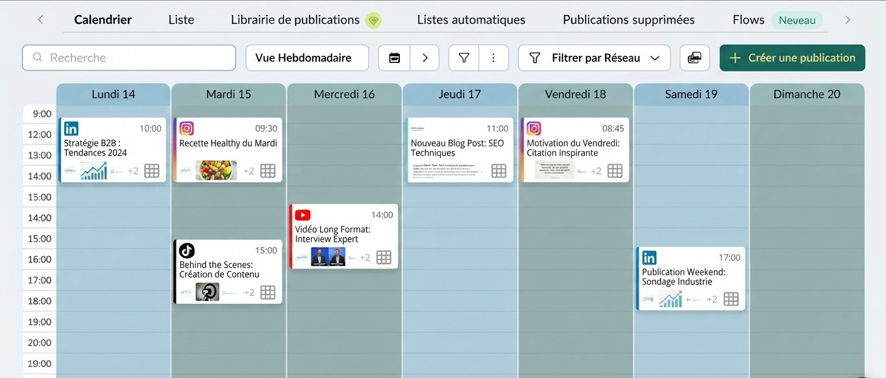
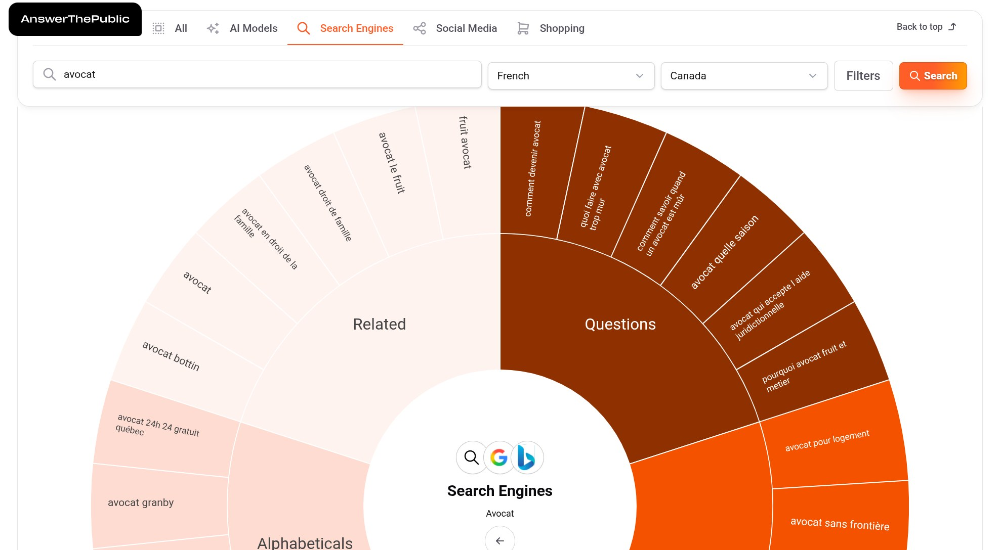
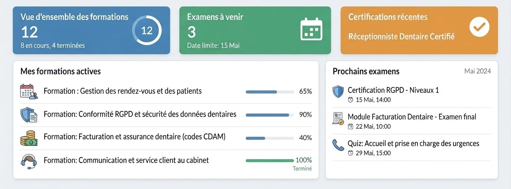
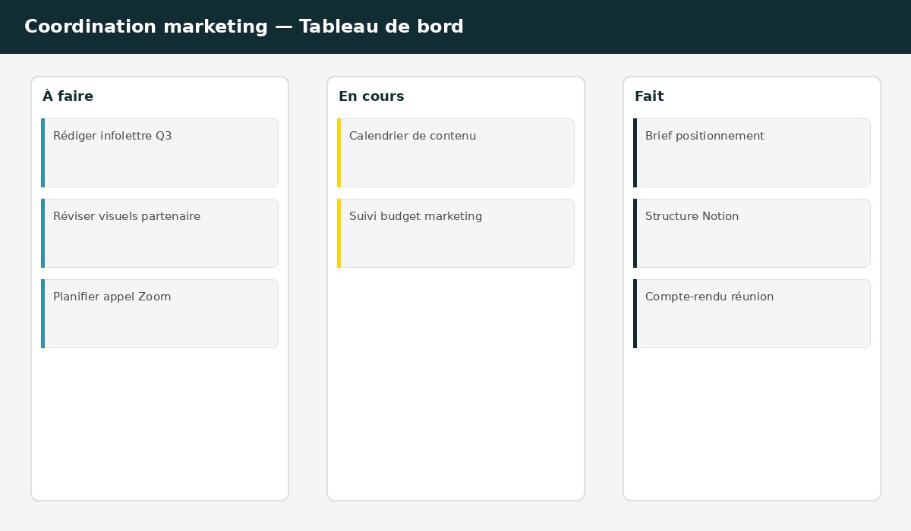
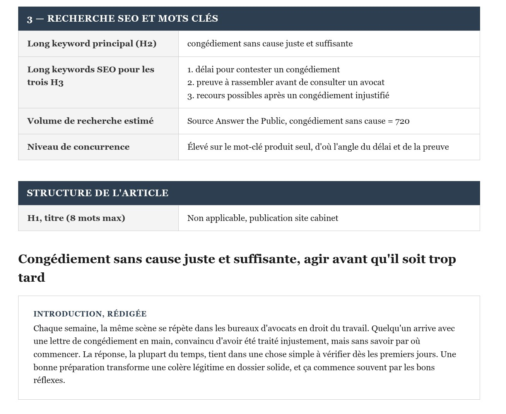
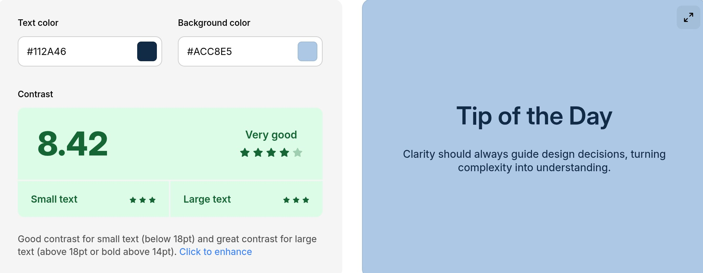

Mandats récents
La confiance que vous placez en nous est précieuse, et on la traite comme telle : aucun nom de client n'est affiché sans accord écrit. Voici néanmoins un aperçu de ce qu'on fait, présenté par secteur.
À propos des visuels : certaines images sont fournies par nos clients, d'autres recréées pour préserver leur confidentialité.
Diagnostic des comptes dormants depuis un an, reconstruction des gabarits visuels avant toute publication, calendrier resserré sur les premières semaines pour donner un signal de sérieux, puis rythme de publication stabilisé.
La difficulté à surmonter
Comparaison des plateformes selon les besoins réels du client, migration du contenu existant, structuration technique pour le SEO, recherche des questions fréquentes du public cible, suivi des positions après lancement.
La difficulté à surmonter
Recensement des formations données au personnel au fil de l'année, structuration du contenu par module avec lecture audio intégrée pour faciliter la révision, tests avec l'équipe avant l'intégration au système interne de la clinique.
La difficulté à surmonter
Centralisation de toutes les tâches marketing dans un seul espace de travail, désignation d'un responsable par dossier, mise en place de rencontres hebdomadaires courtes pour trancher plutôt que discuter en boucle.
La difficulté à surmonter
Collecte des vraies questions posées par la clientèle avant la rédaction, rédaction d'articles et de communiqués ancrés sur ces questions plutôt que sur des mots-clés génériques, validation du contenu par un avocat avant publication.
La difficulté à surmonter
Exploration de palettes et de typographies alignées sur le positionnement, vérification systématique du contraste pour l'accessibilité, application du système sur les supports numériques et imprimés, guide de marque livré à la fin.
La difficulté à surmonter
Chaque mandat est différent, mais l'implication reste la même. Discutons du vôtre.
Réserver ma rencontre découverte